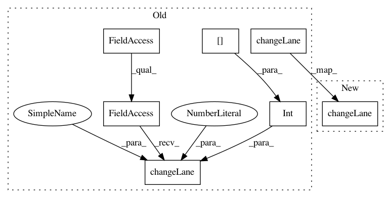

72fe3d87bf35cd3a41019cf72ab70796726e6e2b,cistar-dev/cistar/core/base_env.py,SumoEnvironment,apply_lane_change,#SumoEnvironment#Any#Any#Any#,430
Before Change
for i, vid in enumerate(veh_ids):
if vid in self.rl_ids:
if safe_target_lane[i] == target_lane[i]:
self.traci_connection.vehicle.changeLane(vid, int(target_lane[i]), 10000000)
if target_lane[i] != current_lane[i]:
self.vehicles[vid]["last_lc"] = self.timer
penalty.append(0)
else:
self.traci_connection.vehicle.changeLane(vid, int(safe_target_lane[i]), 10000000)
penalty.append(-1)
else:
self.traci_connection.vehicle.changeLane(vid, target_lane, 10000000)
After Change
penalty.append(0)
if target_lane[i] != current_lane[i]:
self.vehicles[vid]["last_lc"] = self.timer
self.traci_connection.vehicle.changeLane(vid, int(target_lane[i]), 10000000)
else:
penalty.append(-1)
else:
// This line is called if we have built a lane changing model for a human car
In pattern: SUPERPATTERN
Frequency: 3
Non-data size: 7
Instances
Project Name: flow-project/flow
Commit Name: 72fe3d87bf35cd3a41019cf72ab70796726e6e2b
Time: 2017-06-14
Author: eugenevinitsky@airbears2-10-142-39-100.airbears2.1918.berkeley.edu
File Name: cistar-dev/cistar/core/base_env.py
Class Name: SumoEnvironment
Method Name: apply_lane_change
Project Name: flow-project/flow
Commit Name: db26c45c5e16296d77edbf39442360e817b0269a
Time: 2017-06-13
Author: akreidieh@gmail.com
File Name: cistar-dev/cistar/core/base_env.py
Class Name: SumoEnvironment
Method Name: apply_lane_change
Project Name: flow-project/flow
Commit Name: 65bd3c2db9b43065f3f15fd0160c94b1618df4d6
Time: 2018-02-12
Author: akreidieh@gmail.com
File Name: flow/envs/base_env.py
Class Name: Env
Method Name: apply_lane_change